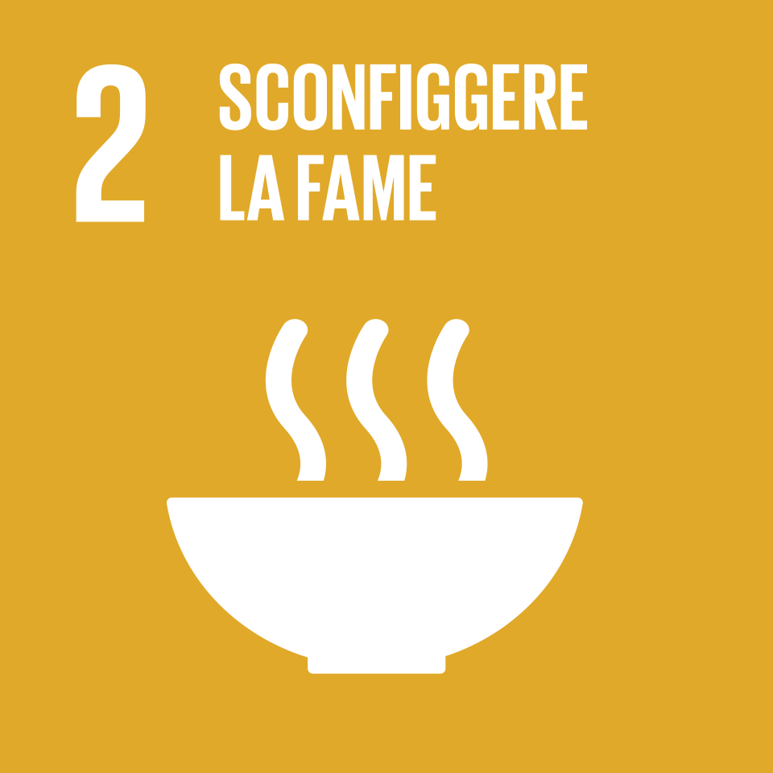

2
Porre fine alla fame, raggiungere la sicurezza alimentare, migliorare la nutrizione e promuovere un'agricoltura sostenibile.
L'Obiettivo 2 dell'Agenda 2030 delle Nazioni Unite si propone di porre fine alla fame,
raggiungere la sicurezza alimentare, migliorare la nutrizione e promuovere
un'agricoltura sostenibile. L'accesso al cibo è considerato un diritto umano
fondamentale: senza una nutrizione adeguata non è possibile garantire salute,
istruzione e benessere, e le disuguaglianze tra le popolazioni continuano ad aggravarsi.
Nonostante i progressi degli ultimi decenni, ancora oggi milioni di bambini e giovani nel mondo non hanno accesso
a un'istruzione di qualità. La pandemia da COVID-19 ha aggravato ulteriormente la situazione,
causando la più grande interruzione dei sistemi educativi della storia: oltre 1,6 miliardi di studenti
sono stati colpiti dalla chiusura delle scuole.

L'SDG 2 si suddivide in 8 target da raggiungere entro il 2030
Garantire entro il 2030 l'accesso universale a cibo sicuro, nutriente e sufficiente per tutto l'anno, in particolare per i poveri e le persone vulnerabili.
Porre fine a tutte le forme di malnutrizione, inclusa la denutrizione infantile, l'obesità e le carenze di micronutrienti.
Raddoppiare la produttività agricola e il reddito dei piccoli produttori alimentari, con particolare attenzione alle donne e ai popoli indigeni.
Garantire sistemi di produzione alimentare sostenibili e pratiche agricole resilienti che preservino gli ecosistemi e si adattino ai cambiamenti climatici.
Mantenere la diversità genetica di sementi, piante coltivate e animali d'allevamento per garantire la sicurezza alimentare a lungo termine.
Aumentare gli investimenti in infrastrutture rurali, ricerca agricola e tecnologie nei paesi in via di sviluppo.
Correggere e prevenire le restrizioni commerciali e le distorsioni nei mercati agricoli mondiali.
Adottare misure per garantire il corretto funzionamento dei mercati alimentari e limitare l'eccessiva volatilità dei prezzi.